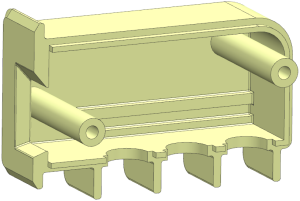
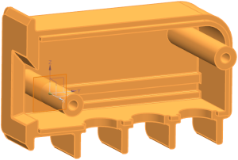

Create the linked mirror part
-
Open asm2_85_housing_rt.

-
In the background of the Assembly Navigator, right-click and make sure WAVE Mode is active.
-
In the Assembly Navigator, right-click asm2_85_housing_rt and choose WAVE→Create Linked Mirror Part.
-
In the Create Linked Mirror Part dialog box, in the Linked Mirror Part Name box, type ***_housing_lt, where *** represents your initials.
-
In the Objects to Mirror group, in the list box, select MODEL.
-
In the Mirror Plane group, from the Specify Plane list, select YC–ZC Plane .

-
Expand the Settings group and click Non-exact Mirror – Keep Broken Links.
Creating the linked mirror part as non-exact lets you make modifications without losing them when the mirror part updates from the source part.
Keeping broken links prevents features that are dependent on the linked geometry from being deleted. You can reparent the broken links when it is convenient.
-
Click OK.
The new part contains the linked mirror body. If you try to assemble the two halves at this time, the long mounting studs will interfere with each other and the alignment tabs will overlap.